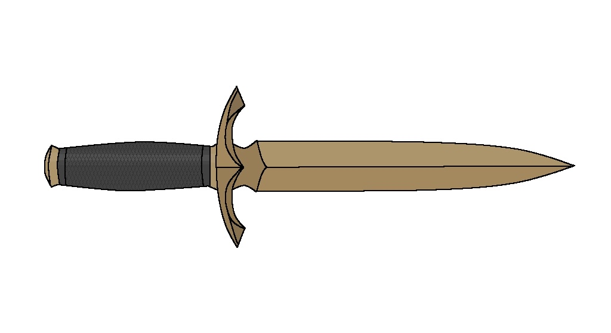
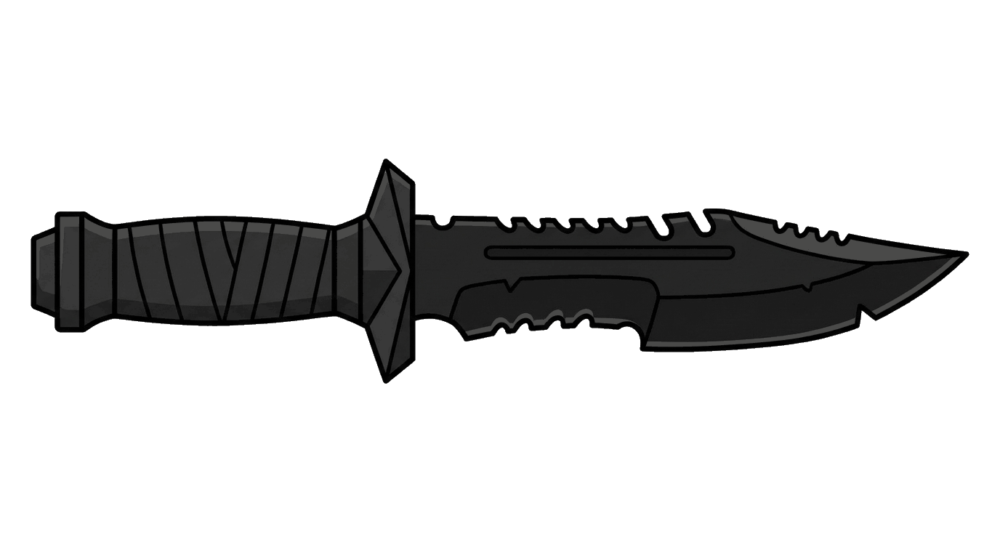
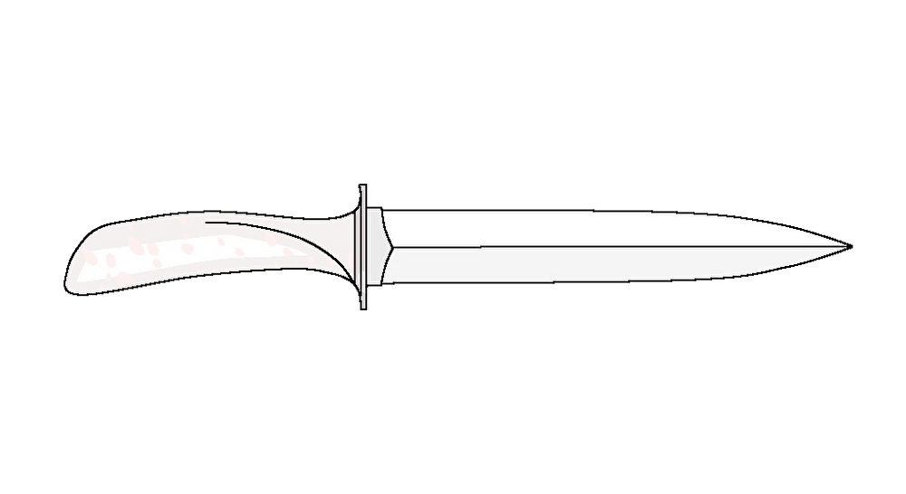
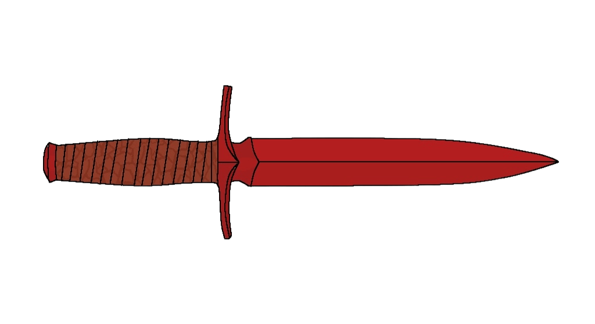
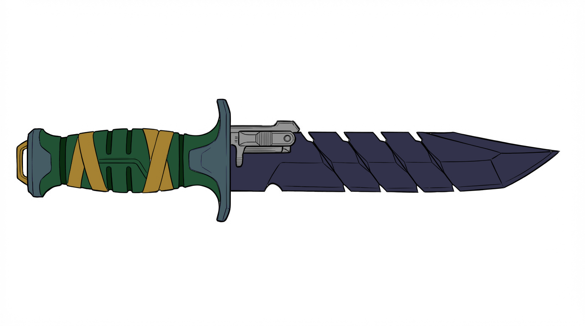

1. 狐色のナイフ（パラジェイのナイフ）
為政者の覚悟と、時代を越えた継承

継承ルート
解説
本来はカイン・カナからパラジェイへの十五歳の成人祝いとして贈られる予定でしたが、暗殺によりキナベイを経由して託されました。第一教導職のみが許される狐色の装飾は建国の象徴として振るわれ、のちに歴史の闇へ失踪。1990年代、ハーロピノンの骨董屋でミナツが偶然発見し、過去の血塗られた来歴を知らぬまま「中庸の構え」を支える相棒となります。
カラベイ教導国の建国前夜から、現代のハーロピノン、そしてスクニューネへと至るまで。歴史の表舞台と裏社会を交錯しながら、為政者や騎士、そして次代を担う若者たちの手を渡り歩いた「5本の特別なナイフ」が存在します。ある刃は呪いを断ち切るために海へ沈み、ある刃は愛する者を守るために血に染まりました。それぞれのナイフに刻まれた血と祈りの軌跡を紐解きます。
為政者の覚悟と、時代を越えた継承

本来はカイン・カナからパラジェイへの十五歳の成人祝いとして贈られる予定でしたが、暗殺によりキナベイを経由して託されました。第一教導職のみが許される狐色の装飾は建国の象徴として振るわれ、のちに歴史の闇へ失踪。1990年代、ハーロピノンの骨董屋でミナツが偶然発見し、過去の血塗られた来歴を知らぬまま「中庸の構え」を支える相棒となります。
歴史を剪定する「白梟」の狂刃

国家の裏で暗躍する「白梟」の象徴であり、一切の光を反射しない漆黒の刃。初代大統領パレイから最高傑作の諜報員レイへ渡り、さらに議会と闇権力を握ったエティレイが謀略に運用。最終的に過激派ジェンの手で「セナリーナの夜」の人口削減計画に使われた、呪われた系譜の凶器です。
血に染まらぬ誓いと、愛ゆえの堕落

いかなる血も滲まない純白塗装を持つカナの愛刀は、柔和の構えを極めたキナベイから無心の構えのライへ受け継がれ、平和と対話の象徴でした。しかしライから譲渡されたアカウは、タネイを守るために修羅の道を選択。血を拒むはずの純白は、皮肉にも深すぎる愛により初めて赤く染まりました。
復讐から祈りへ昇華された重剣

ビライン家の家紋と「これ以上血塗られませんように」という祈りを刻んだ深紅の刃。アカネイが復讐と共に振るった「狂暴の構え」の象徴でしたが、ライとの共闘で怒りは統治の強さへ転化。神前試合ののち、全ての国民の過ちを背負う覚悟を決めた第五代第一教導職タネイへ託され、迷いなき治世の証になります。
誠実さを試す刃と、見つけ出した「自分」

24枚の極薄オプシディオン刃を換装して戦う特殊ナイフで、持ち主の誠実さが揺らぐと砕け散る特級の呪物。偽りの第一教導職アヤから独裁者チュリアチュライへ渡り、彼は狂気的な誠実さで維持した末に、負の連鎖を断つためドゥラム海へ自沈。それから18年後、VUISALのロケで潜った孫娘ヴィオンに引き揚げられ、呪縛を脱した刃は「自分を見つける」ための宝へ変わりました。
カラベイの伝統剣術「デューレイ」。すべての原点は、かつて「影梟」と呼ばれた伝説の剣客、アハレン・ハサネイにあります。彼の教えは二つの大きな流れに分かれ、時に激しく衝突し、時に互いを補い合いながら、時代を動かす英雄たちへと受け継がれていきました。
左: 剛直・狂暴系譜 / 右: 柔和・無心系譜
ハーロピノン共和国・ヘリエン国立大学の弱小サークル「西アルトス研究会」。そこには国境や身分、そして陰謀を越えて集った個性豊かな学生たちがいました。
そして、彼らの後輩たちを中心に結成され、スクニューネで大ブレイクを果たした異色のガールズバンド「VUISAL（ヴューサル）」。時代と国境を越えて絆を紡ぐ、若き主人公たちをご紹介します。
ヘリエン国立大学の公認サークル。部室も予算もない吹き溜まりでしたが、彼らの入部を機に街を巻き込む数々の事件（と大食い大会）の中心地となっていきます。
ミナツ・アルスノーヴァがプロデュースし、スクニューネを拠点に活動する6人組ガールズバンド・ダンスユニット。ヴィオンを除く5人は、西アルトス研究会の後輩（新1年生）です。
ヴィオンの宝物を守るため、裏社会相手にも一歩も引かない熱さを持つ。
透き通る歌声と柔らかな統率力で、濃すぎるメンバーを笑顔でまとめる。
常時腹ペコ。無言でケータリングを消し去る独特の存在感。
機械のように正確なカッティングでバンドの壁を作る、実は情の深いプレイヤー。
チエルのベースと噛み合う強靭なエンジンとして、現場の空気を一気に引き上げる。
海ロケでアヤのナイフを引き揚げ、仲間を信じる心と共に「自分自身の音」を掴み取った。